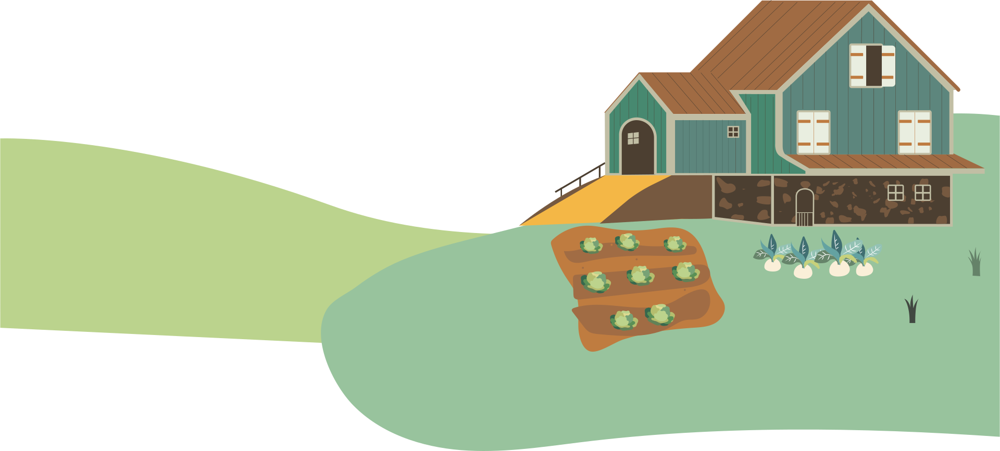
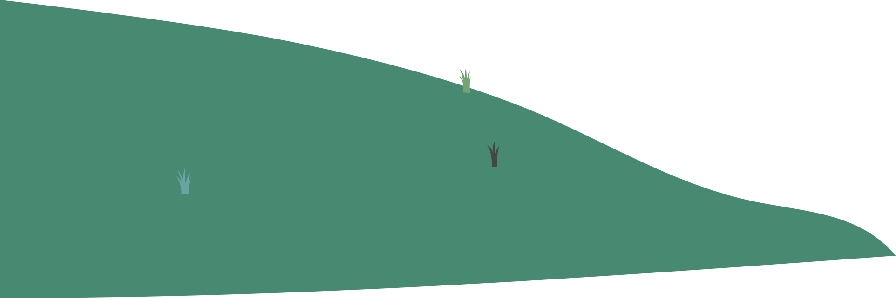
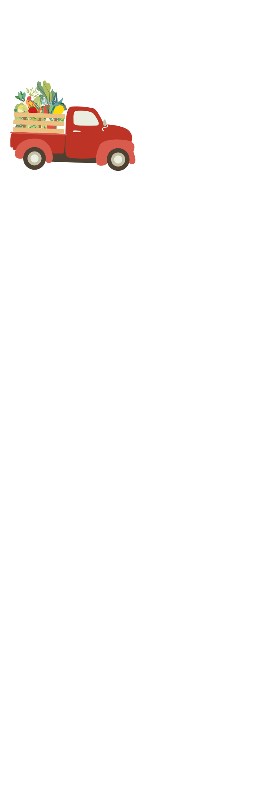
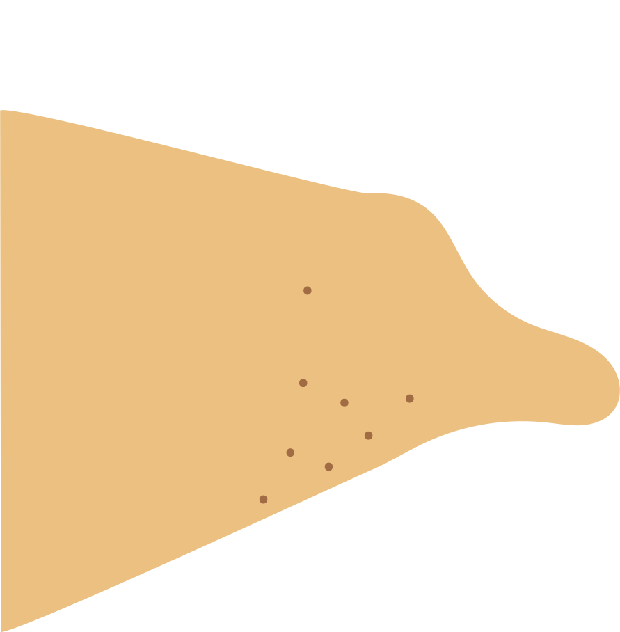
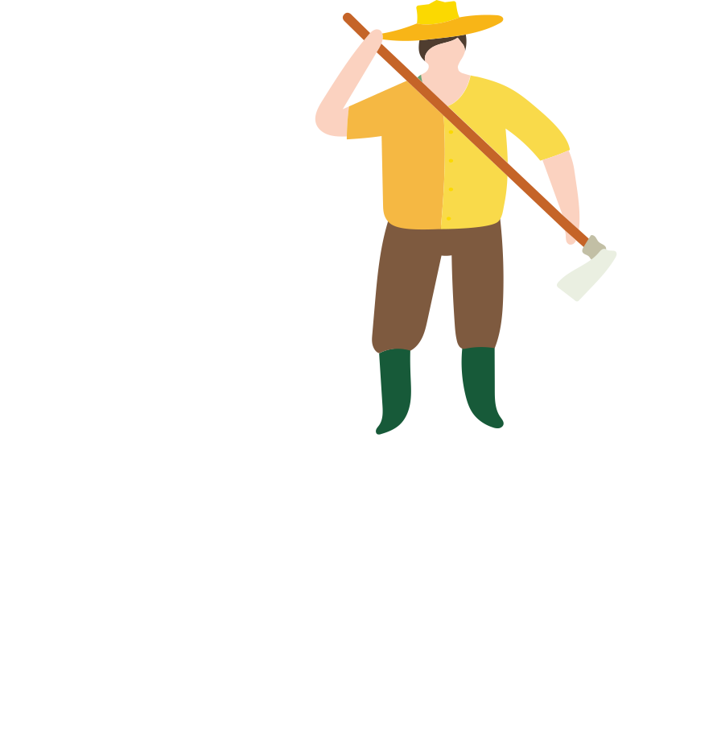
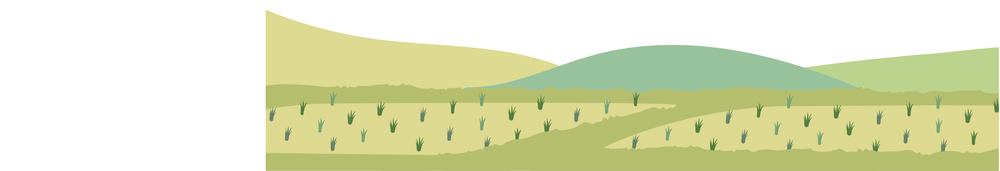
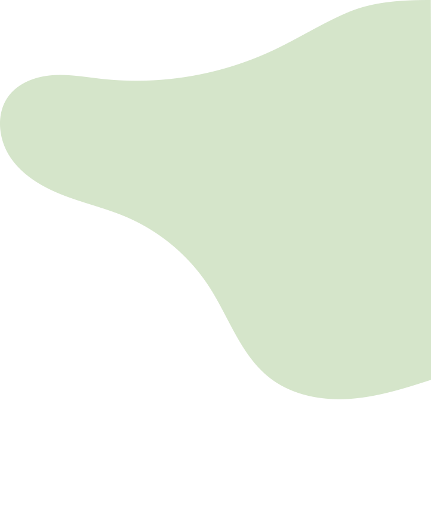
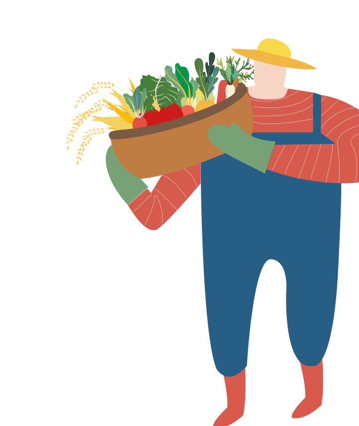
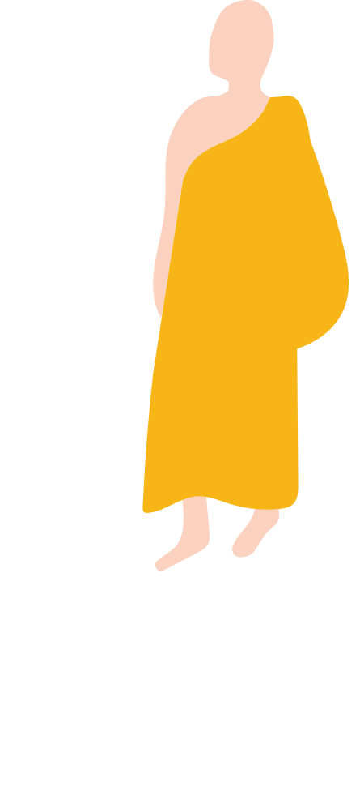

ทฤษฎีใหม่ขั้นที่สอง
“เมื่อเกษตรกรเข้าใจในหลักการและได้ปฏิบัติที่ดินของตัวเองจนได้ผลแล้ว ต้องเริ่มขั้นที่สองคือ ให้เกษตรกรรวมพลังกันในรูปกลุ่ม
กลุ่ม หรือสหกรณ์ร่วมแรงในการผลิต การตลาด การเป็นอยู่ สวัสดิการ การศึกษา และศรัทธาเพื่อให้พอมีกินใช้ ช่วยให้สังคมดีขึ้นพร้อมๆ กันไม่รวยคนเดียว”
(พระราชดํารัสเมื่อวันที่ 12 กุมภาพันธ์ พ.ศ.2538)
1. การผลิต (พันธุ์พืช เตรียมดิน ชลประทาน ฯลฯ)
เกษตรกรจะต้องร่วมมือในการผลิต โดยเริ่มตั้งแต่
ขั้นเตรียมดิน การหาพันธุ์พืช ปุ๋ย การจัดการนํา และ
อื่น๓ เพื่อการเพาะปลูก
2. การตลาด (ลานตากข้าว ยุ้ง เครื่องสีข้าว การจําหน่ายผลผลิต) เมื่อมีผลผลิตแล้วจะต้อง
เตรียมการต่าง ๆ เพื่อการขายผลผลิตให้ได้ประโยชน์
สูงสุด เช่น การเตรียมลานตากข้าวร่วมกัน การ
จัดหายุ้งรวบรวมข้าว เตรียมหา เครื่องสีข้าว ตลอด
จนการร่วมกันขายผลผลสิตใแหได้ราคาดคีและลดค่าใช้
จ่าย
3. การเป็นอยู่ (อาหาร เครื่องนุ่งหุ่ม ฯลฯ) ในขณะ
เดียวกันเกษตรกรต้องมีความเป็นอยู่ที่ดีพอสมควร
โดยมีปัจจัยพื้นฐานในการดํารงชีวิตเช่นอาหารการกินต่างๆ
เสื้อผ้าที่พอเพียง
4. สวัสดิการ (สาธารณสุข เงินกู้) แต่ละชุมชนมี
สวัสดิภาพและบริการที่จําเป็น เช่น มีสถานีอนามัย
เมื่อยาม ป่วยไข้หรือมีกองทุนไว้กู้ยืมเพื่อประโยชน์
ในกิจกรรมต่าง ๆ ของชุมชน
5. การศึกษา (โรงเรียน ทุนการศึกษา) ชุมชนควร
มีบทบาทในการส่งเสริม เช่น มีกองทุนเพื่อการศึกษาให้เล่าเรียนให้แก่เยาวชนของชุมชน
6. สังคมและศาสนา (ชุมชน วัด) ชุมชนควรเป็นที่
รวมในการพัฒนาสังคมและจิตใจ โดยมีศาสนาเป็นที่
ยืดเหนียว
กิจกรรมทั้งหมดลังกล่าวมา ต้องได้รับความร่วมมือ
จากทุกฝ่ายที่เกี่ยวข้อง ไม่ว่าจะเป็นส่วนราชการ
องค์กรเอกชน ที่สําคัณที่สุดคือตัวของสมาชิกใน
ซุมชนเอง
ทฤษฎีใหม่ขั้นที่สาม
“ เมื่อดําเนินการขั้นตอนที่สองแล้ว เกษตรกรหรือกลุ่มเกษตรกรก็ควรพัฒนา ก้าวหน้าไปสู่ขั้นที่สามต่อไป คือ
ร่วมมือกับแหล่งเงินและแหล่งพลังงาน ตั้งและ บริการโรงสี ตั้งและ บริการร้านสหกรณ์ ช่วยกันลงทุน ช่วยกัน
พัฒนาคุณภาพชีวิตของประ ชาชนชนบท ซึ่งไม่ได้ทําอาชีพเกษตรอย่างเดียว”
ทั้งนี้ฝ่ายเกษตรกรและฝ่ายธนาคาร(หรือบริษัทเอกชน)ก็จะได้รับประโยชนโดย
- เกษตรกรขายข้าวได้ราคาสูง เพราะไม่ถูกกดราคา
- ธนาคาร(หรือบริษัทเอกชน)สามารถซื้อข้าวบริโภคในราคาต่ำเพราะตรงจากเกษตรกรและมาสีเอง
- เกษตรกรซื้อเครื่องอุปโภคบริโภคในราคาตํา เนื่องจากรวมกันซื้อเป็นจํานวนมาก(เป็นร้านสหกรณ์ราคาขายส่ง)
- ธนาคาร หรือบริษัทเอกชนจะสามารถกระจายบุคลากรเพื่อไปดําเนินการใน กิจกรรมต่างๆ ให้เกิดผลดียิ่งขึ้น